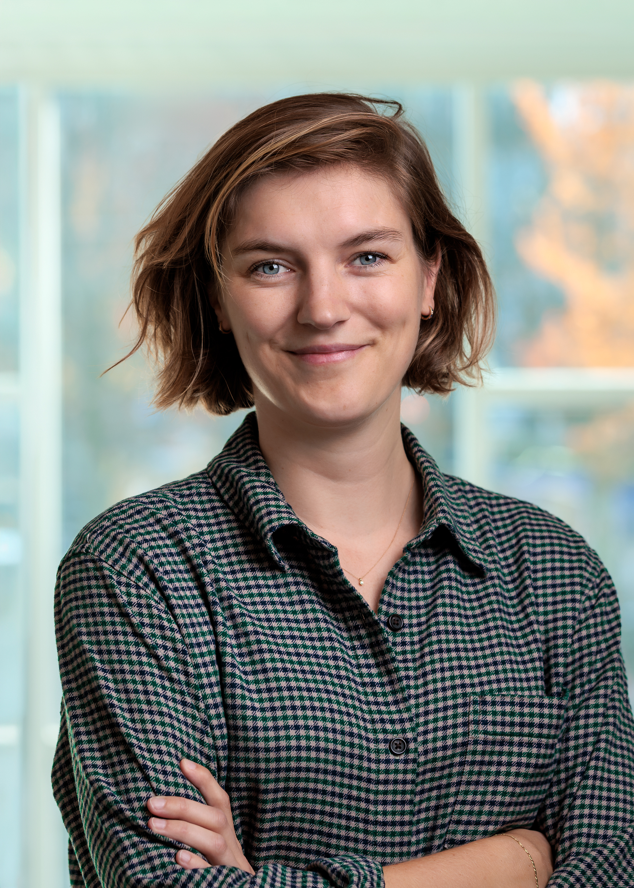

I'm a postdoctoral researcher on the INTRAPARTY ERC project at the University of Gothenburg. My work focuses on how groups within political parties try to shape their party's agenda — what influence strategies do they use, and what determines that choice?
My interest also lies in the underrepresentation of women in politics. I study how parties recruit candidates, what drives political ambition, and how political violence against politicians shapes participation. I defended my PhD at the University of Antwerp in 2025.
Ik ben postdoctoraal onderzoeker bij het INTRAPARTY ERC-project aan de Universiteit van Göteborg. Mijn werk richt zich op hoe groepen binnen politieke partijen de agenda van hun partij proberen te beïnvloeden — welke invloedstrategieën ze gebruiken en wat die keuze bepaalt.
Mijn onderzoeksinteresse richt zich op de ondervertegenwoordiging van vrouwen in de politiek. Ik onderzoek hoe partijen kandidaten werven, wat politieke ambitie aandrijft, en hoe politiek geweld participatie beïnvloedt. In 2025 verdedigde ik mijn proefschrift aan de Universiteit van Antwerpen.